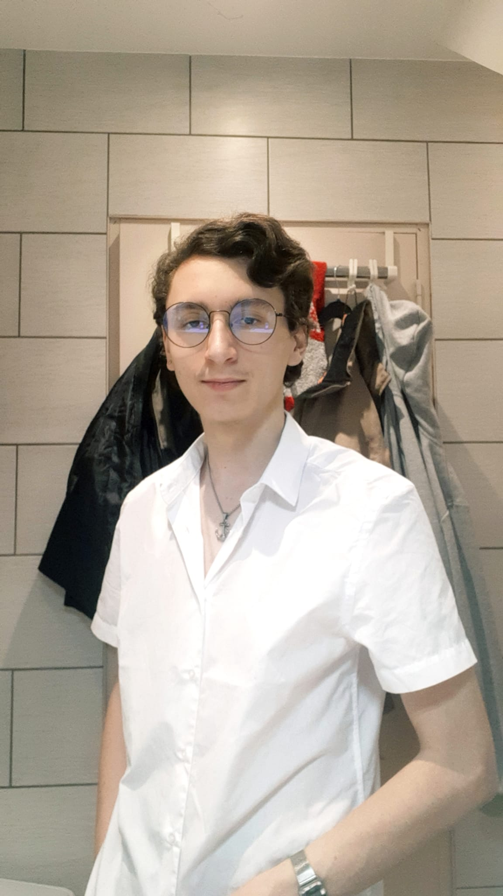
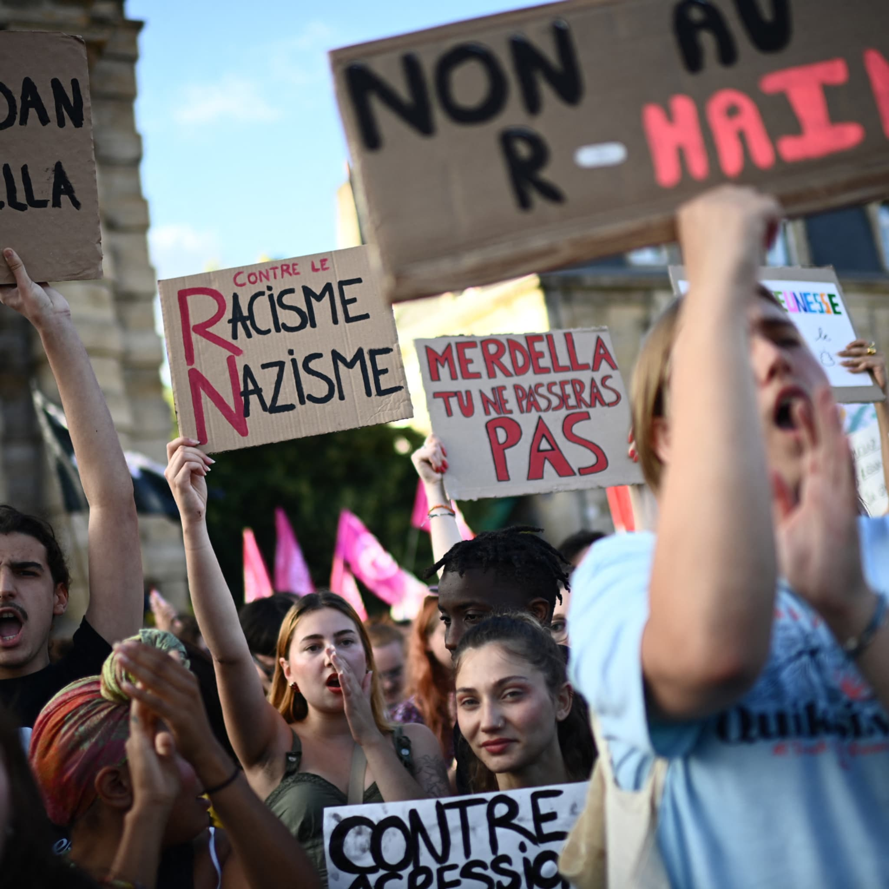
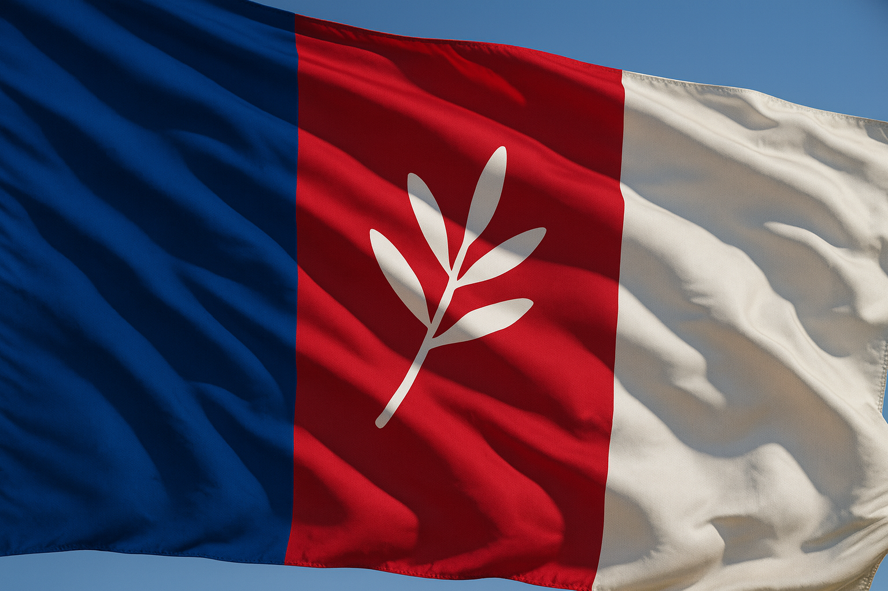

L'équipe

Thoma Nathan
Président fondateur
Président fondateur

Marie Lefevre
Porte-parole nationale
Porte-parole nationale
"Libre d'être égaux"
Retrouvez ici quelques visuels clés du mouvement :
 "Libre d'être égaux"
Chaque territoire doit disposer des mêmes chances, des mêmes services, des mêmes perspectives.
Respect de chaque personne, lutte contre les discriminations, égalité homme-femme, soutien aux plus fragiles.
Produire en France, innover, garantir notre indépendance alimentaire, énergétique et industrielle.
Aucun gaspillage public. Chaque euro dépensé doit être utile, chaque réforme doit être réalisable.
La France doit redevenir un médiateur mondial, non un acteur de tensions.
- Égalitaire entre métropoles, villes moyennes, campagnes et Outre-mer ;
- Moderne, grâce à une école réinventée et une économie souveraine ;
- Sûre, avec une sécurité humaine et efficace ;
- Écologique, via des solutions réalistes (géothermie, reforestation, transports locaux) ;
- uste, grâce à une fiscalité équilibrée et des aides ciblées ;
- Pacifique, redevenant un acteur majeur de médiation internationale.
les régions ont voix au chapitre,
les services publics fonctionnent,
le travail est respecté et justement rémunéré,
l’école prépare réellement l’avenir,
la fiscalité est simple, lisible et équitable,
l’économie est forte et souveraine,
la sécurité est garante des libertés,
personne n’est oublié, ni les classes moyennes, ni les jeunes, ni les territoires.
- Réforme territoriale complète (retour aux régions historiques, cantons renforcés).
- Système éducatif modernisé dès la 6e, alternance progressive et nouveaux programmes tournés vers l’avenir.
- Économie souveraine : réindustrialisation, nationalisations stratégiques, relocalisation.
- Fiscalité juste et efficace, avec taxes intelligentes et baisse de TVA sur les produits essentiels.
- Transition écologique réaliste : géothermie, reforestation, transports régionaux.
- Sécurité humaniste, basée sur la présence locale et la prévention.
- Paix internationale, via la création du SIRRAT, force de médiation française.
- Dignité sociale : lutte contre la précarité, accompagnement des sans-abri, immigration intégrée.
- Renouveau symbolique, hymne secondaire, identité visuelle.
Outre-mer respecté, autonome, modernisé, sécurisé.
- plus juste,
- plus simple,
- plus efficace,
- plus écologique,
- plus apaisée.
Parce qu’une Nation ne grandit que quand chacun y trouve sa place.
« Libre d'être égaux.' »
La France devient médiatrice internationale neutre, se positionnant comme un pays qui n’entre plus dans les conflits, mais les résout. Création d’une image diplomatique forte, fondée sur la négociation, le dialogue et l'équilibre entre grandes puissances (États-Unis, Russie, Chine, Maghreb, Corée du Nord…). République 2.0 : renouveau symbolique national sans toucher à la Constitution : second hymne national moderne inspiré du Chant des Girondins ; cérémonies républicaines rénovées ; identité visuelle unifiée incluant l’Outre-mer ; transparence totale de l’État.
- Nouvelle force de paix : SIRRAT (Section Internationale de Ralliement et de Réconciliation lors d’Affrontements et de Tensions). - Deux branches : * SIRRAT-O : opérations extérieures, rôle diplomatique armé minimal ; * SIRRAT-I : gestion de crises internes (DOM-TOM + Hexagone). - Formation double : militaire + médiation/négociation. - Usage des armes uniquement en dernier recours. - Protection rapprochée du Président lors des signatures d’accords internationaux. - Objectif : faire de la France une force mondiale de stabilité.
- Programme complet de réinsertion sociale pour sans-abris et personnes isolées : * logements temporaires sécurisés ; * formation + accompagnement psychologique ; * accès prioritaire au CTD adulte ou à l’apprentissage accéléré. - Immigration contrôlée mais humaine, avec : * apprentissage du français obligatoire ; * logement + travail encadrés ; * suivi administratif, social et professionnel. - Objectif : réduire l’errance, favoriser l’emploi et éviter les poches de pauvreté.
- Soutien financier annuel aux refuges animaliers, financé par taxes spécifiques (croquettes industrielles, produits animaux intensifs…). - Lutte renforcée contre l’abandon, obligation de stérilisation encadrée des animaux domestiques. - Investissements dans la réhabilitation des espaces naturels et reforestation massives. - Stratégie écologique réaliste, non punitive mais responsable.
- Réouverture et rénovation des services publics locaux : maternités, antennes hospitalières, maisons médicales de proximité. - Modernisation de l’administration : * simplification drastique des démarches ; * guichets uniques dans les « Maisons de la République » ; * numérisation complète ; * réduction des doublons administratifs. - Service de transport modernisé (trains hydrogène, lignes locales réouvertes...). - Investissements dans les DOM-TOM pour infrastructures, sécurité civile et résilience climatique.
L’UETF instaure une sécurité équilibrée, fondée sur plus de présence humaine, de prévention et d’efficacité judiciaire, sans jamais restreindre les libertés. Le modèle repose sur : - Des forces mieux réparties sur tout le territoire, avec des brigades cantonales et la réouverture de postes en zones rurales et DOM-TOM ; - Des moyens modernisés (caméras-piétons, matériel, éclairage public réhabilité, analyse rapide en cas de crise) et des agents mieux formés à la médiation, à la désescalade et à la protection des victimes ; - Une justice réellement rapide et fonctionnelle, notamment via la remise en place de tribunaux de proximité pour juger plus vite les délits ; - Une priorité absolue aux violences graves (violences intrafamiliales, agressions, trafics, délinquance organisée ect) avec des sanctions appliquées plus fermes et un suivi obligatoire ; - Un grand plan de prévention : sport, culture, accompagnement social, lutte contre la précarité, intégration des jeunes, coopération école–services sociaux ; - Une sécurité respectueuse des droits, sans surveillance massive, avec transparence totale des interventions et participation citoyenne ; - L’appui du SIRRAT-I lors de crises locales pour garantir l’apaisement et protéger les civils. Objectif : une France plus sûre, apaisée et unie — sans dérives autoritaires, grâce à une sécurité de terrain, humaine et efficace.